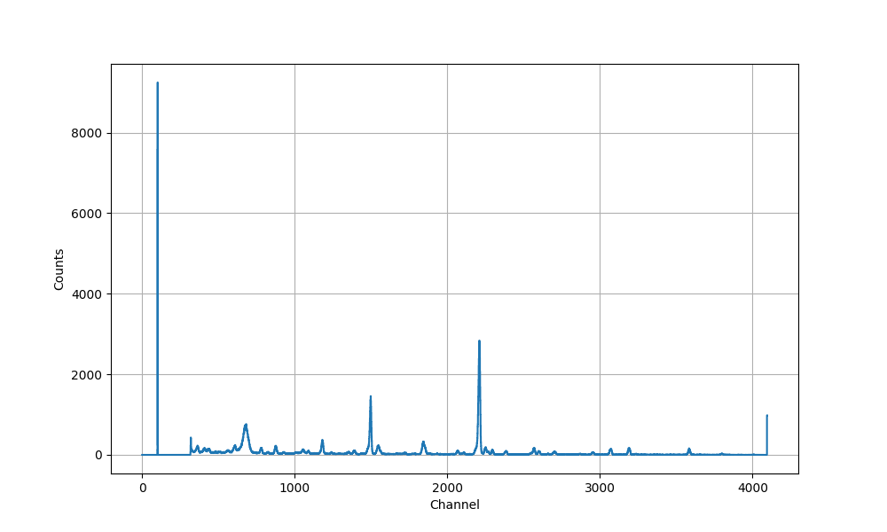
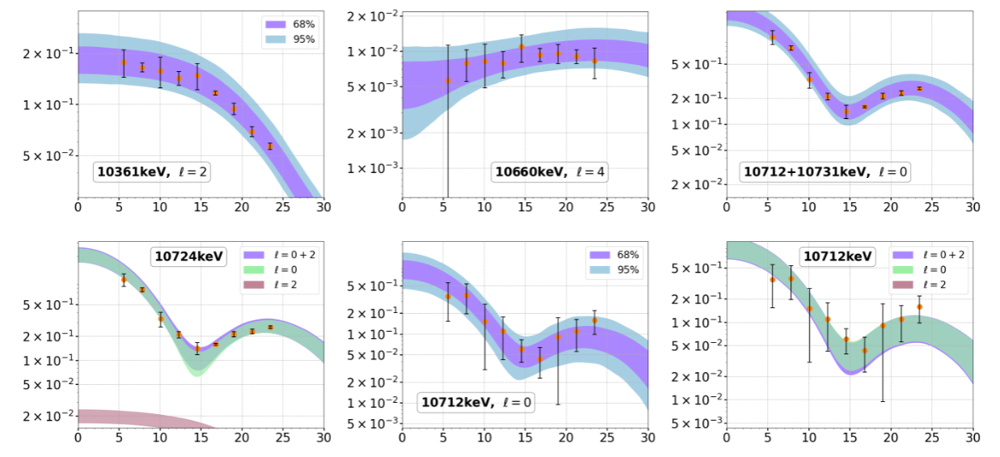
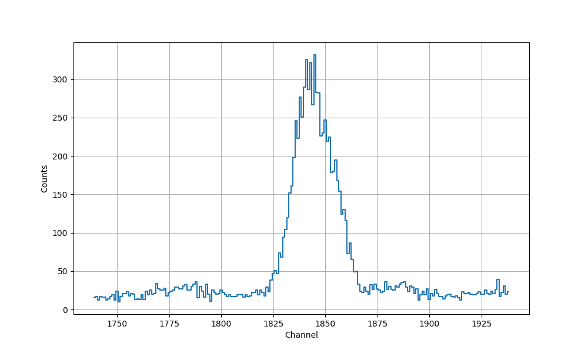
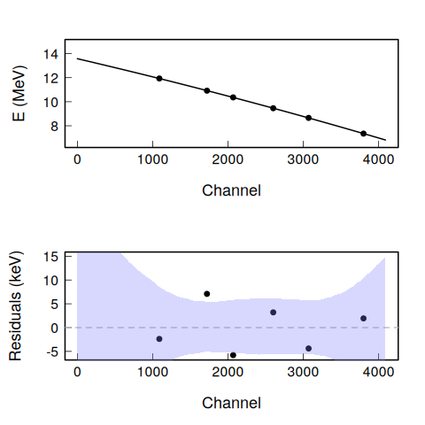
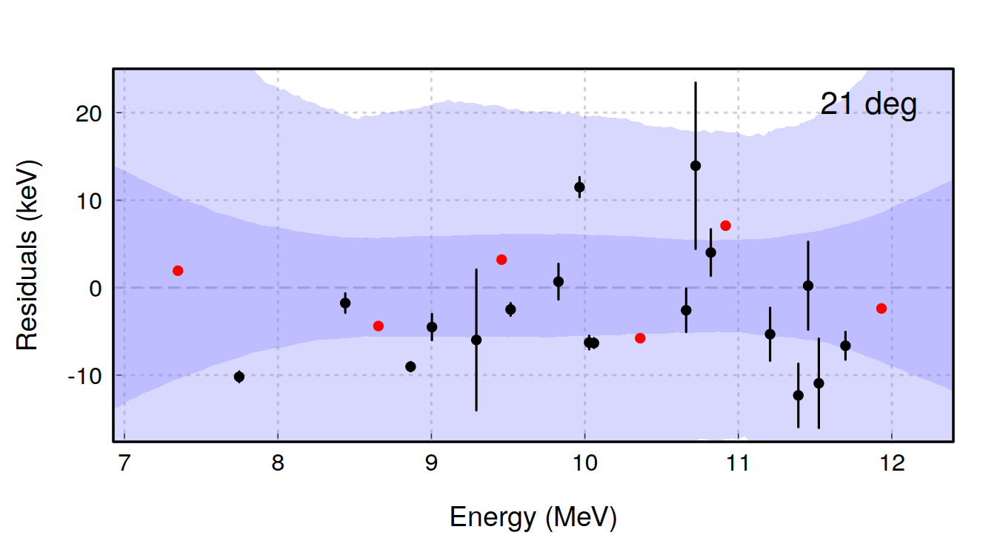
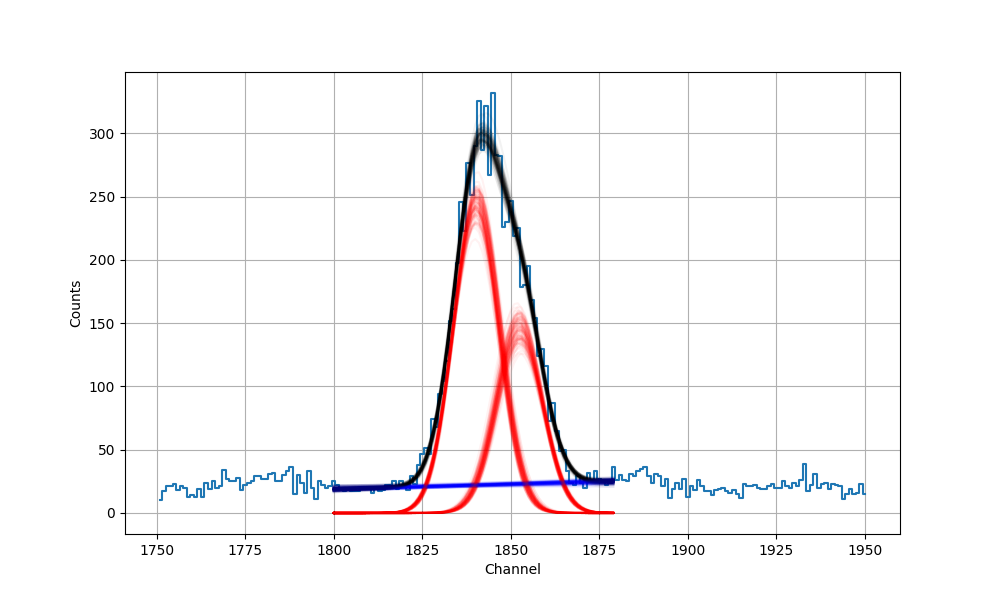

Kaixin has made great progress in

Some of the differential cross sections are hard to extract

Either
Calibration lines
| Ex (MeV) | dEx (MeV) | Chn | dChn |
|---|---|---|---|
| 7.3486 | 0.0001 | 3798.96 | 0.38028 |
| 8.6549 | 0.0004 | 3070.03 | 0.18573 |
| 9.45781 | 0.00005 | 2600.64 | 0.310776 |
| 10.3607 | 0.0003 | 2068.32 | 0.235831 |
| 10.9172 | 0.0003 | 1720.63 | 0.81847 |
| 11.9329 | 0.0002 | 1088.21 | 0.378985 |
Lines of interest
| Ex (MeV) | dEx (MeV) |
|---|---|
| 10.7122 | 0.0002 |
| 10.7311 | 0.0002 |



Peak 1 Position = Channel 1852.44 +/- 0.38
Peak 1 Area = 2381.72 +/- 127.48
Peak 2 Position = Channel 1840.31 +/- 0.26
Peak 2 Area = 3970.84 +/- 140.07